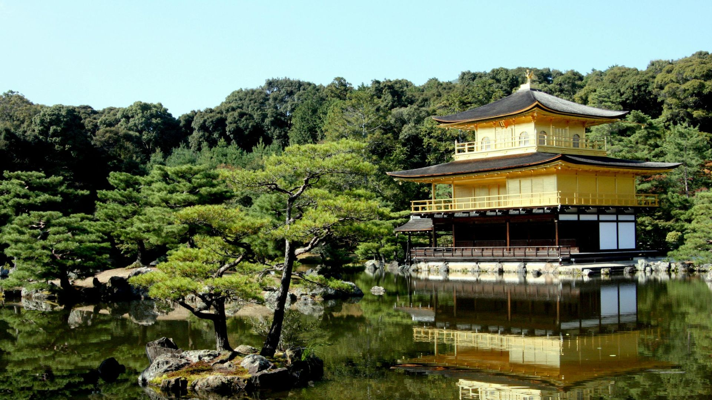

Monte Fuji
O Monte Fuji é o cartão-postal do Japão e a montanha mais famosa do país. Com 3.776 metros de altura, ele atrai milhares de turistas todos os anos.
Um espaço para compartilhar experiências, desafios e descobertas de quem vive no Japão. Aqui você encontra curiosidades da cultura japonesa, informações úteis e histórias reais do dia a dia.
Tradições, costumes e curiosidades que fazem parte da vida no Japão.
Experiências reais de quem vive no Japão com a família.
Dicas, informações e desafios do mercado de trabalho japonês.
Comida, festivais, costumes e o cotidiano da vida japonesa.

Trabalhar no Japão é mais do que um sonho, pra muitos é um projeto de vida que exige coragem, planejamento e responsabilidade.

Empreiteiras ou haken gaisha - as empresas de RH que oferecem empregos para estrangeiros no Japão.

Aprender japonês pode parecer desafiador, mas hoje existem cursos acessíveis, práticos e pensados para diferentes perfis de alunos.

Descubra as 10 principais regras sociais do Japão que todo visitante precisa conhecer.
Desde o silêncio em espaços públicos até a etiqueta à mesa.

No Japão a culinária é repleta de sabores e de cuidados ao fazer cada prato, refletindo não apenas tradição, mas também respeito pelos ingredientes e pela experiência de quem irá comer...

O Hinamatsuri (雛祭り), também conhecido como Dia das Meninas ou Festival das Bonecas, é um dos festivais mais delicados e culturalmente ricos do Japão.

O Shinkansen, conhecido como "trem-bala" japonês, é um sistema de transporte ferroviário de alta velocidade que revolucionou as viagens no Japão.

Essa é uma das perguntas mais feitas por quem pensa em vir para o Japão. A resposta curta é: sim, vale a pena financeiramente se houver organização.

O Japão é um país extremamente organizado e com regras sociais muito bem definidas. Muitas atitudes que no Brasil passam despercebidas podem causar desconforto, advertências e até problemas legais por aqui.

Dicas para participar Yukata: É comum vestir esse quimono leve de verão para entrar no clima festivo. Chegada Antecipada: Para garantir bons lugares (muitas vezes em lonas de piquenique), os locais chegam horas antes.
O Monte Fuji é o cartão-postal do Japão e a montanha mais famosa do país. Com 3.776 metros de altura, ele atrai milhares de turistas todos os anos.

O Castelo de Himeji é considerado o castelo mais famoso e mais bem preservado de todo o Japão. Localizado na cidade de Himeji na província de Hyōgo.

Shibuya é um dos bairros mais famosos de Tóquio e um dos centros urbanos mais movimentados do Japão.
.jpg)
O Parque de Nara é um dos destinos turísticos mais famosos do Japão. Localizado na cidade histórica de Nara, o parque é conhecido mundialmente pelos seus veados...

A Floresta de Bambu de Arashiyama é um dos cenários naturais mais famosos do Japão. Localizada no distrito de Arashiyama, na cidade de Kyoto...

O Templo do Pavilhão Dourado, conhecido em japonês como Kinkaku-ji, é um dos templos mais famosos e fotografados do Japão. Localizado na cidade histórica de Kyoto...
Neste vídeo eu trago uma reflexão sobre algumas mudanças e decisões recentes relacionadas aos estrangeiros que vivem no Japão.
O assunto tem gerado bastante debate e até protestos em algumas comunidades, e aqui compartilho minha visão sobre esse cenário.
Nossa rotina de vida. hoje vou mostrar um pouco de como é viver aqui, as pequenas coisas do cotidiano e as experiências que fazem parte da vida de quem escolheu trabalhar e construir uma vida no Japão.
Nem sempre é fácil, mas cada dia traz uma nova história para contar.
Nem sempre as coisas acontecem como esperamos. Às vezes tentamos, insistimos e mesmo assim os resultados não aparecem.
Por isso estou refletindo sobre a possibilidade de começar uma nova etapa em outra província do Japão, sempre pedindo a Deus sabedoria para tomar a decisão certa.
Hoje foi um dia muito especial e cheio de emoções para nossa família aqui no Japão.
Foi o dia da despedida do meu filho do Hoikuen (creche japonesa), marcando o fim de uma etapa muito importante na vida dele.
Última atualização: Maio de 2026
↑